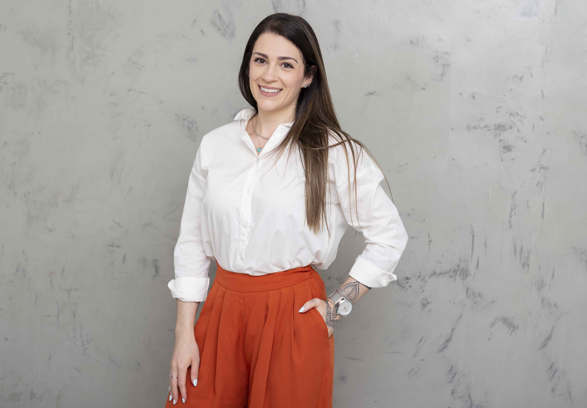
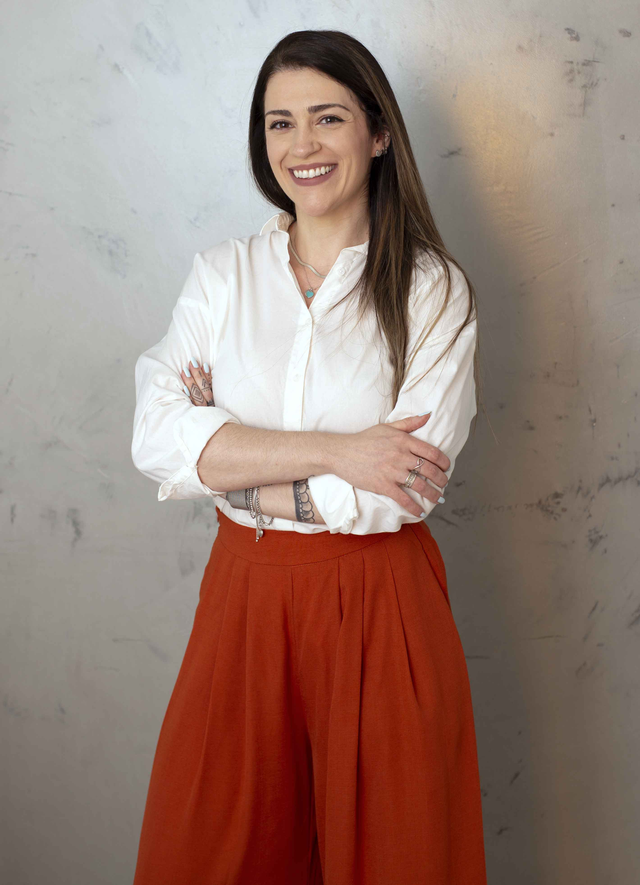

Nascida em São Paulo - Capital em 1992, possui graduação em Psicologia pela Fundação Educacional
de Fernandópolis (2014) e curso de extensão em Psicologia da Saúde, vinculado ao Departamento de
Psiquiatria e Psicologia Médica da Faculdade de Medicina de São José do Rio Preto (FAMERP).
Atuou como Psicóloga Clínica na Clínica Psicophilia e possui experiência como Agente de
Recreação e Recrutamento e Seleção na Escola Megaworks. Estágio na Santa Casa de Misericórdia de
Fernandópolis, realizando atendimentos nas alas masculina, feminina, infantil, pronto socorro,
hemodiálise e UTI; Estágio na empresa Elevapex, realizando recrutamento e seleção e aplicação de
testes.
Desde Março/2018, trabalha na assistência a pacientes da Casa Hunter (Associação
Brasileira dos Portadores da Doença de Hunter e Outras Doenças Raras).
]

